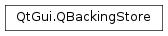

QBackingStore¶
Synopsis¶
Functions¶
- def
beginPaint(arg__1) - def
endPaint() - def
flush(region[, window=nullptr[, offset=QPoint()]]) - def
hasStaticContents() - def
paintDevice() - def
resize(size) - def
scroll(area, dx, dy) - def
setStaticContents(region) - def
size() - def
staticContents() - def
window()
Detailed Description¶
The
PySide2.QtGui.QBackingStoreclass provides a drawing area forPySide2.QtGui.QWindow.
PySide2.QtGui.QBackingStoreenables the use ofPySide2.QtGui.QPainterto paint on aPySide2.QtGui.QWindowwith type RasterSurface. The other way of rendering to aPySide2.QtGui.QWindowis through the use of OpenGL withPySide2.QtGui.QOpenGLContext.A
PySide2.QtGui.QBackingStorecontains a buffered representation of the window contents, and thus supports partial updates by usingPySide2.QtGui.QPainterto only update a sub region of the window contents.
PySide2.QtGui.QBackingStoremight be used by an application that wants to usePySide2.QtGui.QPainterwithout OpenGL acceleration and without the extra overhead of using thePySide2.QtWidgets.QWidgetorPySide2.QtWidgets.QGraphicsViewUI stacks. For an example of how to usePySide2.QtGui.QBackingStoresee the Raster Window Example .
-
class
PySide2.QtGui.QBackingStore(window)¶ Parameters: window – PySide2.QtGui.QWindowConstructs an empty surface for the given top-level
window.
-
PySide2.QtGui.QBackingStore.beginPaint(arg__1)¶ Parameters: arg__1 – PySide2.QtGui.QRegionBegins painting on the backing store surface in the given
region.You should call this function before using the
PySide2.QtGui.QBackingStore.paintDevice()to paint.
-
PySide2.QtGui.QBackingStore.endPaint()¶ Ends painting.
You should call this function after painting with the
PySide2.QtGui.QBackingStore.paintDevice()has ended.
-
PySide2.QtGui.QBackingStore.flush(region[, window=nullptr[, offset=QPoint()]])¶ Parameters: - region –
PySide2.QtGui.QRegion - window –
PySide2.QtGui.QWindow - offset –
PySide2.QtCore.QPoint
Flushes the given
regionfrom the specifiedwindowonto the screen.The
windowmust either be the top level window represented by this backingstore, or a non-transient child of that window. Passingnullptrfalls back to using the backingstore’s top level window.If the
windowis a child window, theregionshould be in child window coordinates, and theoffsetshould be the child window’s offset in relation to the backingstore’s top level window.You should call this function after ending painting with
PySide2.QtGui.QBackingStore.endPaint().See also
- region –
-
PySide2.QtGui.QBackingStore.hasStaticContents()¶ Return type: PySide2.QtCore.boolReturns a boolean indicating if this window has static contents or not.
-
PySide2.QtGui.QBackingStore.paintDevice()¶ Return type: PySide2.QtGui.QPaintDeviceReturns the paint device for this surface.
Warning
The device is only valid between calls to
PySide2.QtGui.QBackingStore.beginPaint()andPySide2.QtGui.QBackingStore.endPaint(). You should not cache the returned value.
-
PySide2.QtGui.QBackingStore.resize(size)¶ Parameters: size – PySide2.QtCore.QSizeSets the size of the window surface to
size.See also
-
PySide2.QtGui.QBackingStore.scroll(area, dx, dy)¶ Parameters: - area –
PySide2.QtGui.QRegion - dx –
PySide2.QtCore.int - dy –
PySide2.QtCore.int
Return type: PySide2.QtCore.boolScrolls the given
areadxpixels to the right anddydownward; bothdxanddymay be negative.Returns
trueif the area was scrolled successfully; false otherwise.- area –
-
PySide2.QtGui.QBackingStore.setStaticContents(region)¶ Parameters: region – PySide2.QtGui.QRegionSet
regionas the static contents of this window.
-
PySide2.QtGui.QBackingStore.size()¶ Return type: PySide2.QtCore.QSizeReturns the current size of the window surface.
-
PySide2.QtGui.QBackingStore.staticContents()¶ Return type: PySide2.QtGui.QRegionReturns a
PySide2.QtGui.QRegionrepresenting the area of the window that has static contents.
-
PySide2.QtGui.QBackingStore.window()¶ Return type: PySide2.QtGui.QWindowReturns a pointer to the top-level window associated with this surface.
© 2018 The Qt Company Ltd. Documentation contributions included herein are the copyrights of their respective owners. The documentation provided herein is licensed under the terms of the GNU Free Documentation License version 1.3 as published by the Free Software Foundation. Qt and respective logos are trademarks of The Qt Company Ltd. in Finland and/or other countries worldwide. All other trademarks are property of their respective owners.